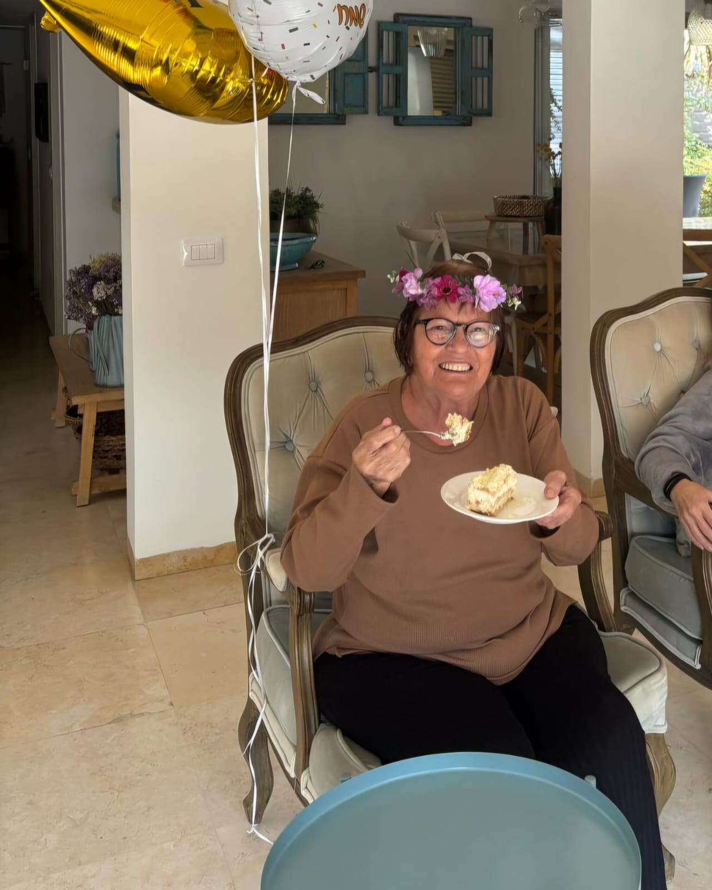
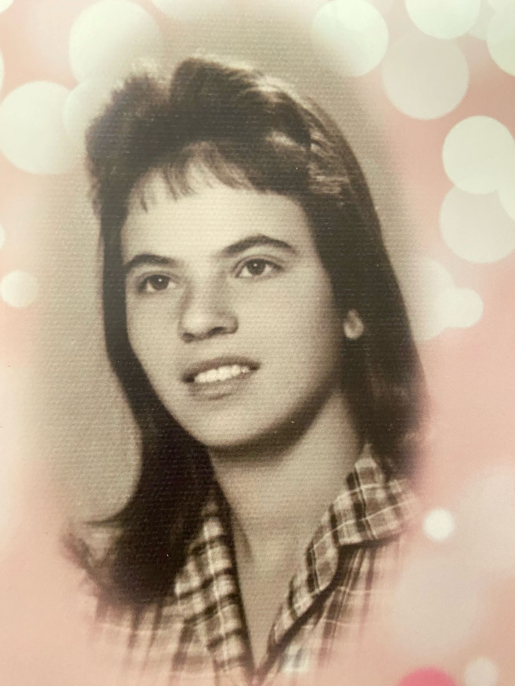
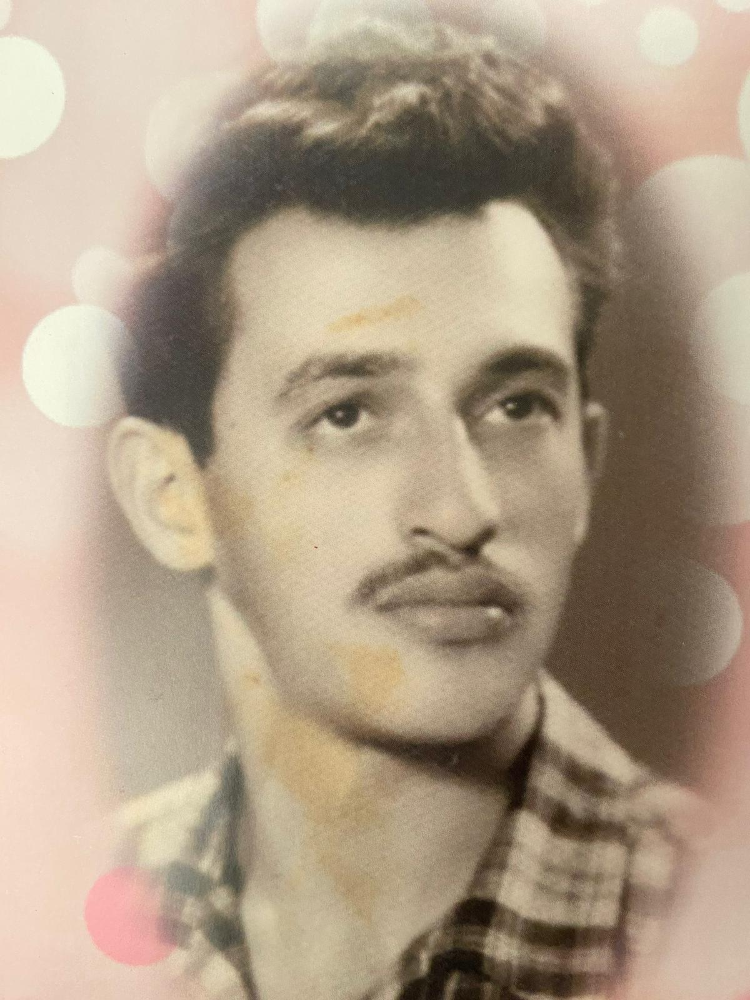
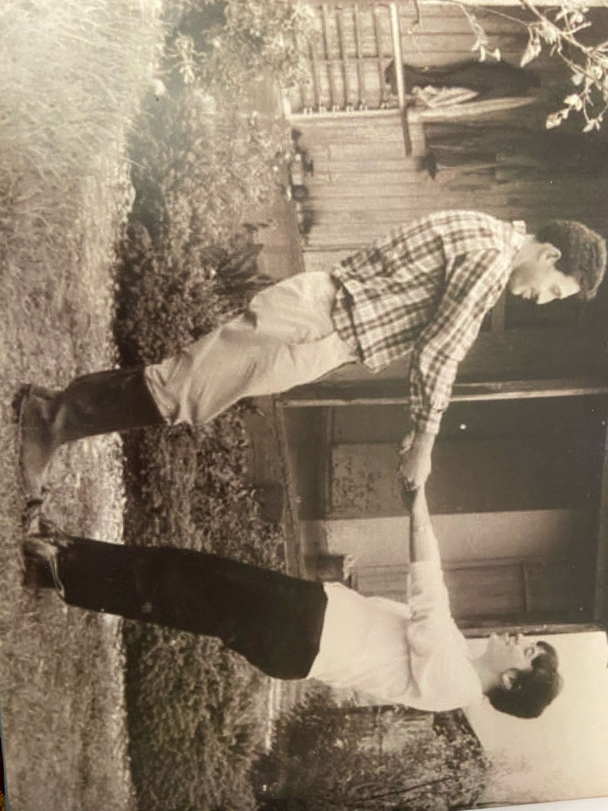
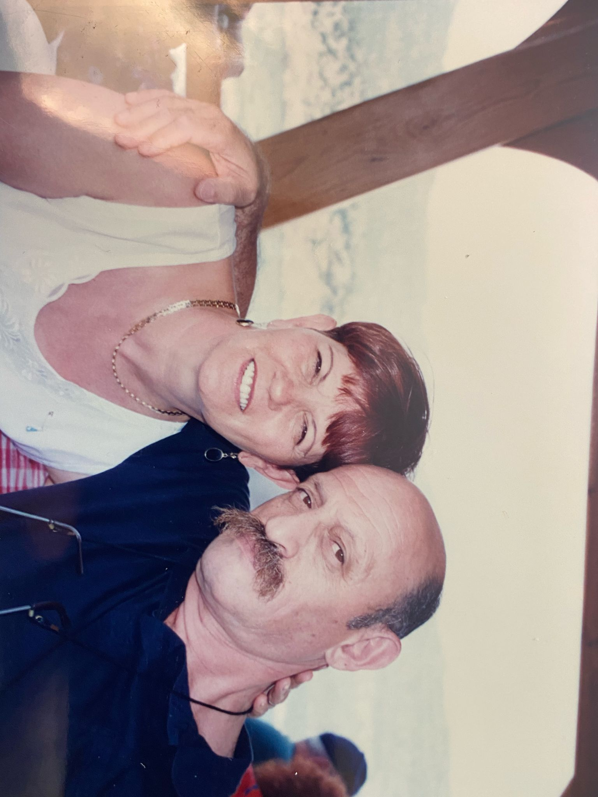
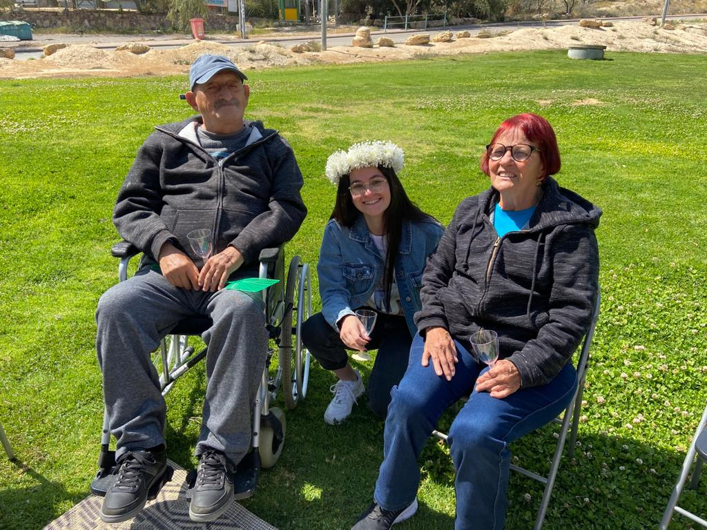
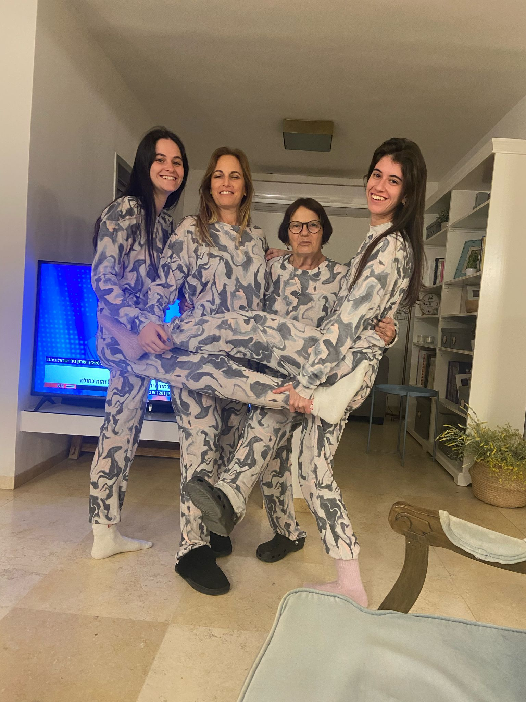
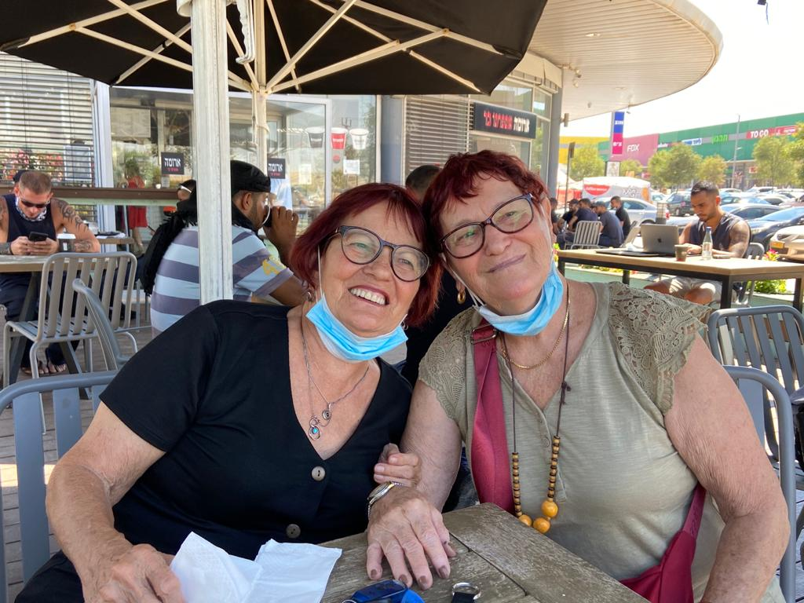

שמי מרים זינגר בת 82 מערד
נולדתי ב- 11 בינואר 1943 בעיר שרטוב שברוסיה יחד עם אחותי התאומה.
נולדתי בזמן מלחמת העולם השניה תוך כדי שהוריי ברחו מפולין לרוסיה על מנת לשרוד את השואה.
בשנת 1947 בהיותי בת 4 אני ומשפחתי ניסינו לעלות ארצה בפעם הראשונה.
עלינו על אניית אקסודוס יחד עם עוד 4500 יהודים שניסו לעלות ארצה אך כשהגענו לארץ הבריטים לא אישרו לנו להיכנס לארץ ושלחו את האנייה לצרפת.
הוריי התעקשו לעלות ארצה, זייפו מסמכים ואישורים וביצעו עליה פעם נוספת. הפעם זה צלח.
לאחר העלייה נשלחנו למעברה באזור חיפה אך כעבור זמן קצר עברנו לגור בדירה משותפת בפתח תקווה שם התגוררנו מספר משפחות יחד.
לאורך התקופה בה גרנו בפתח תקווה אני ואחותי למדנו במסגרת חינוכית דתית.
אחרי כמה שנים בפתח תקווה עברנו כל המשפחה לרמת גן.
כשהייתי בת 10 הוריי התגרשו ואני ואחותי עברנו לגור בקיבוץ והשתייכנו לתנועת הנוער. עברנו מספר קיבוצים ביניהם רמות מנשה וגזית.
בגיל 13 בתנועת הנוער של קיבוץ רמות מנשה הכרתי את שמואל שלימים הפך להיות בעלי היקר והאהוב.
לאחר כמה שנים בקיבוץ רמות מנשה אני ושמואל עברנו יחד לקיבוץ גזית.
בשנת 1959 התגייסתי לצהל ושירתתי בנחל.
בשנת 1962 אני ושמואל בעלי התחתנו ובשנת 1964 נולד הבן הבכור שלנו שחר.
כששחר היה בן שנה עברנו יחד לרמת גן. אחרי מספר שנים ברמת גן יום אחד ראיתי מודעה בעיתון שמחפשים עובדים בתשלובת ערד ומכיוון שלא היו לנו עבודות קבועות ומסודרות החלטנו לעבור לערד כדי שלשמואל תהיה עבודה קבועה.
בשנת 1969 עברנו לערד ובשנת 1970 נולדה ביתנו השניה לימור.
כשהגענו לערד שמואל התחיל לעבוד בתשלובת ואני התחלתי לעבוד כסייעת בגן ילדים.
עבדתי בגני הילדים בעיר כ-10 שנים ולאחר מכן עבדתי כפדיקוריסטית למשך 30 שנה נוספות.
בשנת 1996 נולדה הנכדה הראשונה שלי עמית ביתה הבכורה של לימור, בשנת 1999 נולדה הנכדה השניה שלי יובל ביתה השניה של לימור ובאותה שנה נולד לי נכד נוסף יהלי בנו של שחר ובשנת 2007 נולד הנכד הרביעי שלי רון בנה הצעיר של לימור.
מאז שהנכדים נולדו הם הפכו להיות מרכז חיינו והקפדנו לראות אותם ולפנק אותם כל יום.
היום שהנכדים והילדים שלי כבר גדולים אני מעבירה את הזמן במועדון שם אני פוגשת חברים ונהנית מחוג ציור וחוג סריגה.
ובכל הזדמנות שיש לי אני מנצלת את הזמן יחד עם הנכדים והילדים האהובים שלי.
My Photos
אז שלום לכולם!
זאת אני ביום ההולדת ה-82 שלי

וזאת אני כשהייתי קצת יותר צעירה

הנה בעלי שמואל בצעירותו

הנה אני ובעלי שמואל בקיבוץ

והנה אנחנו קצת יותר מבוגרים

והנה אנחנו בשנים האחרונות יחד עם הנכדה יובל

והנה אני עם ארבעת הנכדים שלי ביום הולדת 80
והנה אני עם הבת שלי והנכדות שלי

והנה אני עם אחותי התאומה

My Playlist
השיר האהוב עליי זה השיר איידישע מאמע של דודו פישר
Give Me a Like
Scan My Code
Q&A
הבדלים בין web1, web2 ו-web3
מודל התקשורת והמעורבות של המשתמש:
Web1: האינטרנט הוא חד כיווניהתוכן הוא לקריאה בלבד. חברות התוכן יוצרות אתרים והמשתמשים הם צרכנים פסיביים.
Web2: אינטרנט דו כיווני, אפשר גם לקרוא וגם לכתוב. המשתמשים לא רק צורכים את התוכן אלא גם מייצרים אותו ברשתות חברתיות בלוגים תגובות ועוד.
Web3: אינטרנט מבוזר, המשתמשים לא רק צורכים ויוצרים תוכן אלא יכולים להיות גם בעלים של נכסים דיגיטליים.
ארכיטקטורת המידע ופרסונליזציה:
Web1: מידע סטטי שזהה לכל המשתמש. האתרים בסיסיים וחווית המשתמש מוגבלת
Web2: מידע דינמי והמלצות המבוססות על ההתנהגות של המשתמש. שימוש בטכנולוגיות שונות המאפשרות אינטרקציה עם התוכן.
Web3: מידע חכם המותאם אישית למשתמש על ידי בינה מלאכותית. הבנה סמנטית של המידע וקישור בין מקורות מידע שונים על מנת לייצר התאמה מושלמת לצרכי המשתמש הספציפי.
דוגמאות לתרחישי שימוש:
עבור חיפוש של "תופעות לוואי של תרופות"
Web1:
המשתמש יקבל דפי אינטרנט סטטיים עם מידע כללי שנכתב על ידי חברות התרופות או מוסדות רפאויים.
המידע יהיה זהה לכל המשתמשים שיבצעו את החיפוש הנ"ל ללא קשר לצרכים שלהם ולאופי השימוש שלהם באינטרנט.
המשתמש לא יכול להגיב לשתף חוויות ולחוות דעה על המידע.
Web2:
המשתמש יקבל תוצאות שונות ומגוונות הכוללות לא רק אתרים רשמיים אלא גם פורומים, בלוגים, פוסטים ברשתות חברתיות, סרטונים ועוד.
המשתמש יכול להיצטרף לקבוצות פייסבוק בנושא, לקרוא תגובות וחוות דעת של משתמשים אחרים בנושא.
בנוסף המשתמש יכול להשיא ראת חוות דעתו האישית על השימוש במוצר.
הפלטפורמות השונות אוספות מידע על התנהגות המשתמש על מנת להציע לו תוכן שרלוונטי עבורו אך המידע עדיין נשאר בבעלות הפלטפורמות.
Web3:
באמצעות מזהה דיגיטלי המשתמש יכול להתחבר לרשת של מידע רפואי המבוססת על בינה מלאכותית המכירה את ההיסטוריה הרפואית שלו.
המידע שמסופק למשתמש הוא מידע המותאם למשתמש. יוצגו לו תופעות הלווואי שסביר שרלוונטיות אליו בהסתמך על התיק הרפואי שלו.
בנוסף המשתמש יכול לשתף את המידע שלו תמורת תגמול דיגיטלי והוא שולט במידע שהוא משתף. המידע שהמשתמש תורם מוצלב עם מידע שנתרם על ידי משתמשים אחרים כדי לייצר תובנות מדויקות יותר מבלי להסתמך רק על המידע שחברות התרופות מספקות.